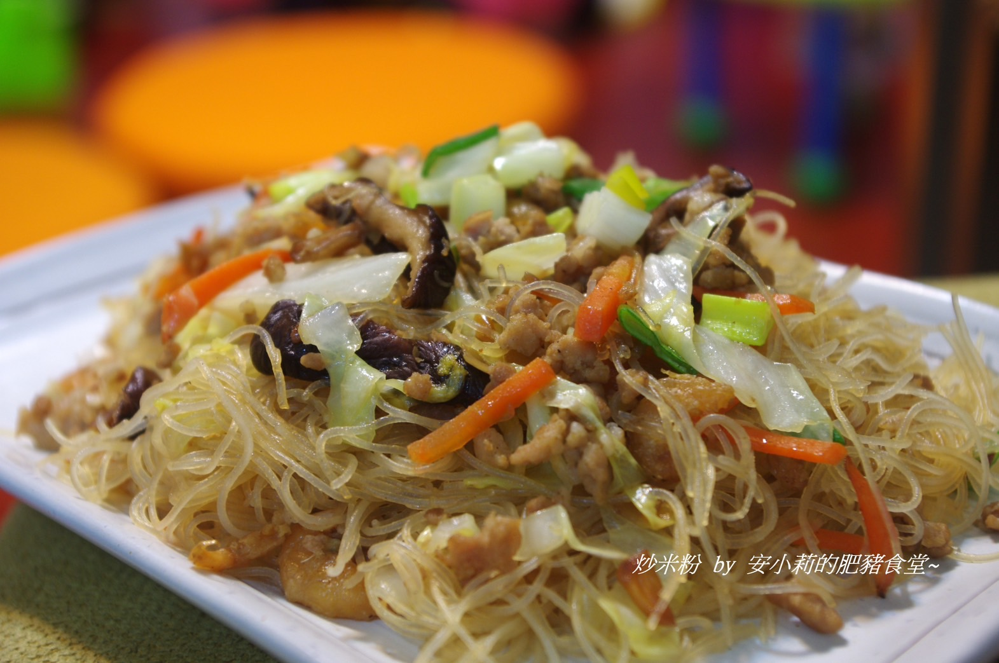
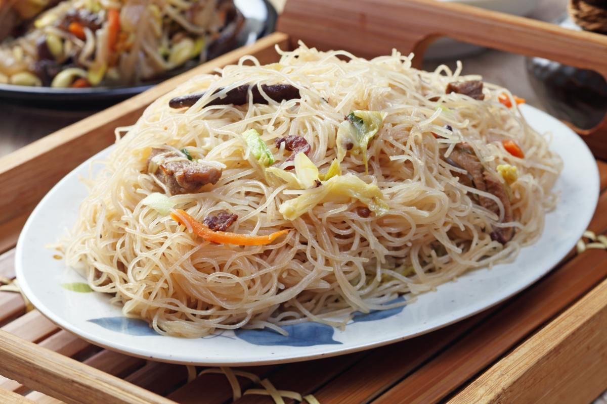

②加入冬蝦拌炒到聞到的蝦味料。
③加入豬五花肉條，炒到肉的油逼出豬肉的香氣。
④豬肉炒到金黃色後加入油蔥醬，炒香，加入紅蘿蔔絲、蔥白和韭菜前段的韭菜白色菜葉續炒一分鐘左右。
起鍋。
 
牛肉麵介紹 紅燒魚介紹 苦瓜鹹蛋介紹 心得
練習 影片 音樂
Your browser does not support the audio element. Your browser does not support the video tag.